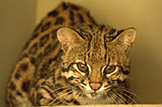
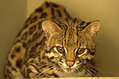

Zoologico de Guarulhos
Animais Silvestres
Mutum do sudeste
Espécie endêmica da Mata Atlântica de baixada, passa a maior parte do tempo no solo, onde se alimenta de frutos e sementes, e se empoleira para dormir e nidificar. Atualmente é encontrado apenas em 11 localidades em Minas Gerais, Espírito Santo e Bahia, habitando matas primárias ou em avançada regeneração, sendo muito sensível à caça, alteração e fragmentação de seu habitat.
Papagaio de peito roxo
Caracterizado pela coloração arroxeada do peito, este papagaio habita as florestas frias, principalmente matas de araucárias, formando grandes bandos. Antes encontrada desde a Bahia até o Rio Grande do Sul, hoje restringe-se ao sudeste e sul do Brasil. A destruição de seu habitat preferencial e a captura pelo tráfico são grandes ameaças á sobrevivência da espécie.
Lobo guará
É uma espécie de pernas longas, coloração alaranjada e orelhas grandes, que habita ambientes abertos como campos e cerrados. Ocorre no Brasil central, áreas do sudeste e sul. Alimentam-se de frutos e pequenos vertebrados, sendo injustamente acusados de predação de aves domésticas, o que leva a sua perseguição e abate, o que, aliado a atropelamentos, ameaça a espécie.
Gato do mato pequeno
O menor felino brasileiro é um animal solitário, de hábito noturno, que habita o solo, mas é capaz de escalar árvores com facilidade, sendo encontrado em todos os biomas do Brasil. A gestação de cerca de 2 meses gera apenas um filhote. Embora possa adaptar-se a áreas modificadas pelo homem, a redução das áreas naturais ameaça a sobrevivência da espécie.
Lontra
Ocorrência na Amazônia, cerrado, mata atlântica, pantanal e campos do sul. Alimenta-se de peixes, crustáceos, répteis, aves e pequenos mamíferos. Possui geralmente hábito noturno. Os machos desta espécie apresentam hábito solitário e só se juntam à fêmea para reprodução. As principais ameaças são perda de habitat, poluição da água e caça.
Mico-leão-de-cara-dourada
Vive em grupos de até 12 animais, no qual há apenas uma fêmea reprodutora que gera dois filhotes por gestação. Alimenta-se predominantemente de frutos e insetos. Vive cerca de 15 anos. Dorme em oco de árvores. Ocorre no sul da Bahia e nordeste de Minas Gerais. Desmatamentos e comércio ilegal reduziram severamente sua população.


 
